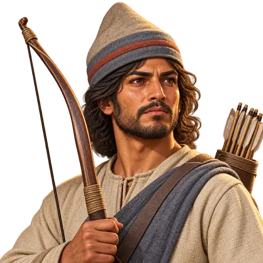
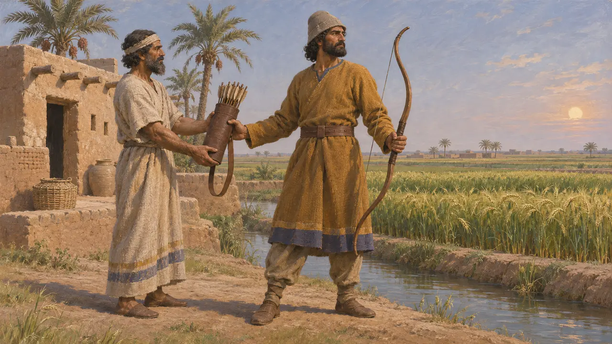
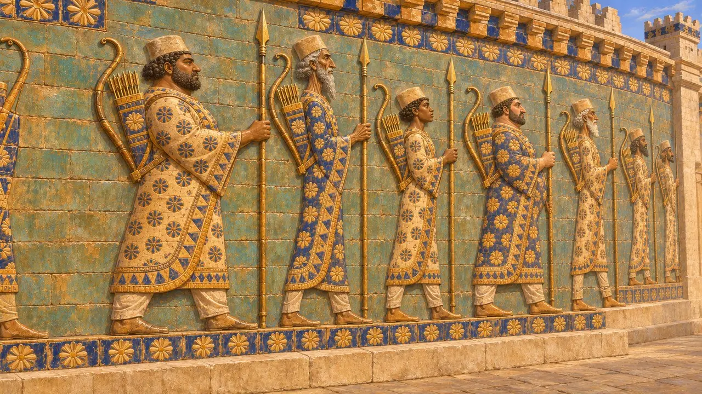
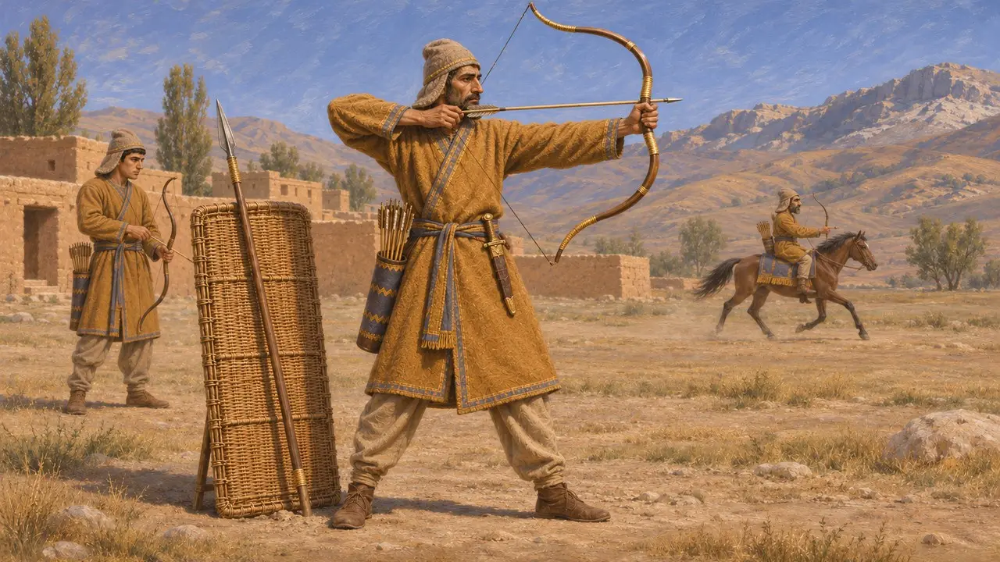
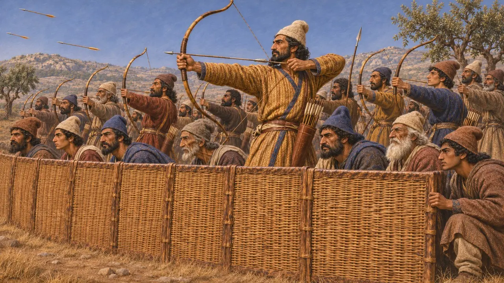
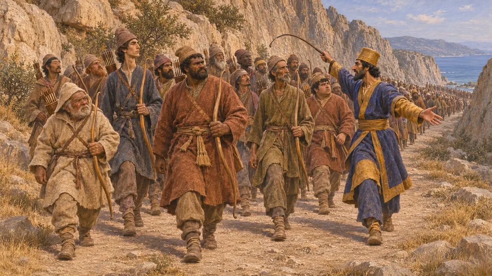

Enzyklopädie › Soldaten und Schiffe

Bogenschütze des Aufgebots
Im königlichen Aufgebot ausgehobener Bogenschütze für das Heer des persischen Königs, 6.–5. Jahrhundert v. Chr.
Die persischen Könige stellten einen Großteil ihres Heeres durch Aufgebote aus den Völkern des Reiches auf, und viele der Männer, die dem Ruf folgten, waren Bogenschützen. In Babylonien belegen Urkunden Land, das unter der Bedingung vergeben wurde, dass der Inhaber als Bogenschütze diente oder einen stellte. Massenhafter Bogenbeschuss war zentral für die persische Kampfweise zu Fuß, und so gehörte der Bogenschütze des Aufgebots, über die Satrapen gemustert, wohl zu den häufigsten Soldaten in den Kriegen des Königs.
Im Spiel: Das Spiel zeigt den Bogenschützen des Aufgebots als Städter mit Jagdbogen, der hinter den Speerträgern des Aufgebots stehend schießt. Das ist eine Vereinfachung: Die erhaltenen Dokumente deuten eher auf dienstpflichtige Landbesitzer als auf Städter hin.

Land gegen einen Bogen
Zeitgenössisch belegtBabylonische Urkunden der Achämenidenzeit verzeichnen Bogenland: Parzellen, die unter der Bedingung vergeben wurden, dass der Inhaber dem König einen Bogenschützen stellte. Die reichsten Belege stammen aus dem Muraschu-Archiv von Nippur, das im späteren 5. Jahrhundert entstand, also nach dem Zeitraum des Spiels. Damals wurde die Pflicht oft in Silber abgegolten oder durch die Ausrüstung eines Ersatzmannes erfüllt, und das Bogenland war unter viele Anteilseigner aufgeteilt.
M. Stolper, Entrepreneurs and Empire, 1985

Bögen in der persischen Kunst
Zeitgenössisch belegtDie Glasurziegelfriese aus dem Palast des Dareios in Susa zeigen Reihen von Gardisten mit Speer, einem Bogen über der Schulter und einem Köcher auf dem Rücken. Reliefs in Persepolis zeigen Bogenfutterale unter den Waffen einiger persischer und medischer Wachen. In dieser Kunst tragen oft dieselben Männer Bogen und Speer, was schlecht zu einer strikten Trennung in Speerträger und Bogenschützen passt.
P. Briant, From Cyrus to Alexander, 2002

Was Herodot über persische Waffen sagt
Antiker BerichtHerodot berichtet, persische Knaben seien in drei Dingen unterwiesen worden: im Reiten, im Bogenschießen und darin, die Wahrheit zu sagen. In seiner Beschreibung des Heeres des Xerxes gibt er dem persischen Fußvolk Schilde aus Flechtwerk, kurze Speere, große Bögen, Rohrpfeile und Dolche. Außerdem führt er zahlreiche mit Bögen bewaffnete Kontingente unterworfener Völker auf, darunter Baktrer, Saken, Inder und Araber.
Herodotus 1.136; Herodotus 7.61-80

Schilde vorn, Pfeile dahinter
UmstrittenHerodot beschreibt, wie die Perser bei Plataiai hinter einem Zaun aus geflochtenen Schilden kämpften und dabei Pfeilsalven abschossen. Moderne Historiker haben Einheiten mit Schildträgern im ersten Glied und Bogenschützen dahinter rekonstruiert, doch wie weit die Glieder voneinander getrennt waren und wie oft diese Formation zum Einsatz kam, ist bis heute umstritten. Die Belege sind spärlich und stammen überwiegend von griechischen Autoren, die persische Niederlagen schildern.
Herodotus 9.61-62; D. Head, The Achaemenid Persian Army, 1992

Wie viele ausgehoben wurden
UmstrittenHerodot beziffert Xerxes' Landheer im Jahr 480 auf 1.700.000 Mann zu Fuß, eine Zahl, die Historiker als stark übertrieben verwerfen; moderne Schätzungen liegen nur bei einem kleinen Bruchteil davon und gehen weit auseinander. Herodot berichtet auch, Offiziere hätten die Männer bei den Thermopylen mit Peitschen vorangetrieben, und griechische Autoren stellten oft ausgebildete Perser schlecht bewaffneten Aufgeboten der Untertanenvölker gegenüber. Wie weit dies echte Unterschiede widerspiegelt und nicht griechische Voreingenommenheit, ist umstritten.
Herodotus 7.60; Herodotus 7.223; P. Briant, From Cyrus to Alexander, 2002
Quellen
- Herodotus, Histories, books 1, 7 and 9
- M. Stolper, Entrepreneurs and Empire, 1985
- P. Briant, From Cyrus to Alexander, 2002
- D. Head, The Achaemenid Persian Army, 1992